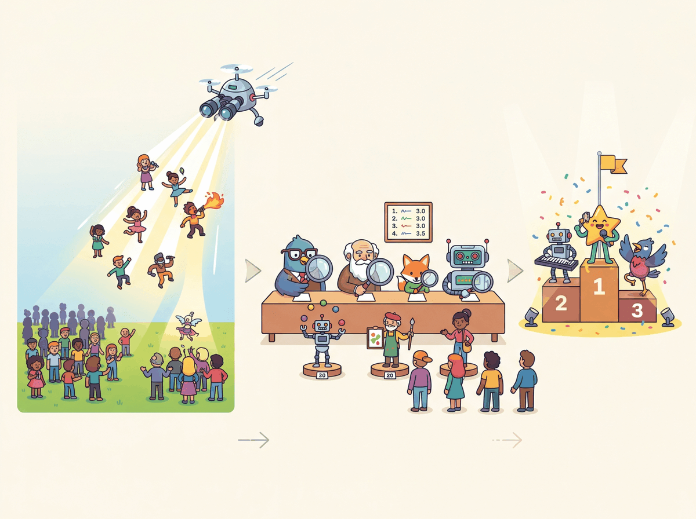

It is not enough to find the right answer. You must first learn to ask the right question.
RAG, Inquisitive AI Agent
Naive RAG fails when the query and the relevant documents use different words, when top-k retrieval misses the best result, or when the model generates claims not supported by context. Advanced RAG techniques attack each of these failure modes: query transformation rewrites the query to improve retrieval, hybrid search combines dense and sparse signals, re-ranking uses powerful cross-encoders to refine initial results, and self-corrective approaches like CRAG and Self-RAG let the system verify and improve its own outputs. Building on the basic RAG architecture from Section 32.1, mastering these techniques is the difference between a demo and a production system.
Prerequisites
This section extends the basic RAG architecture from Section 32.1 with advanced retrieval techniques. You should understand embedding similarity search from Section 31.1 and document chunking strategies from Section 31.6. The reranking models discussed here build on the cross-encoder concepts that complement the bi-encoder approach covered in the embedding chapter.

35.1.1 Query Transformation
Query transformation is the first knob to turn when naive RAG misses the right documents. Three techniques cover most of the field: multi-query expansion (cast a wider net), HyDE (embed a hypothetical answer instead of the question), and step-back prompting (ask a more general version first). All three burn an extra LLM call to rewrite the query before retrieval. Cost, latency, and the failure mode they fix differ.
# Multi-query expansion: ask the LLM to paraphrase the question N ways, retrieve
# for each, and merge the unique hits. Cheap recall boost on ambiguous queries.
def multi_query_retrieve(query: str, collection, k: int = 5, num_variants: int = 3) -> list[dict]:
"""Generate query variants, retrieve for each, and dedupe by chunk id."""
# Use a small/cheap model for the rewrite; quality matters less than diversity.
variants_response = client.chat.completions.create(
model="gpt-4o-mini",
messages=[
{"role": "system",
"content": f"Generate {num_variants} alternative phrasings of the following search query. Return one per line."},
{"role": "user", "content": query},
],
)
variants = variants_response.choices[0].message.content.strip().splitlines()
all_queries = [query, *variants] # Original + paraphrases
seen_ids, merged = set(), []
for q in all_queries:
hits = collection.query(query_texts=[q], n_results=k)
for doc, meta, doc_id in zip(hits["documents"][0], hits["metadatas"][0], hits["ids"][0]):
if doc_id in seen_ids:
continue # Same chunk surfaced by another paraphrase; skip the duplicate.
seen_ids.add(doc_id)
merged.append({"document": doc, "metadata": meta})
return merged[: k * 2] # Expanded recall set, capped to 2kIn a hybrid pipeline, multi-query expansion stacks especially well with the dense-plus-sparse retrieval covered later in this section: each rephrasing widens the dense recall set, and the sparse (BM25) leg then anchors the exact-keyword matches that paraphrasing can dilute. Reach for it first when recall is your bottleneck, since it costs one cheap LLM call and needs no index or embedding changes. Section 35.2 treats the full query-transformation family (multi-query, HyDE, and step-back) as a topic in its own right.
35.1.1.3 Step-Back Prompting
Step-back prompting (Zheng et al., 2023) generates a more abstract or general version of the query before retrieval. For example, the query "What was the GDP growth rate of Japan in Q3 2024?" might be stepped back to "What are the recent economic trends in Japan?" The broader query retrieves documents that provide necessary background context, which is then combined with results from the specific query. compares these three query transformation strategies.
35.1.2 Hybrid Retrieval: Dense + Sparse
BM25 was published in 1994 and is named after the 25th iteration of the Best Matching family of probabilistic retrieval functions developed by Stephen Robertson and Karen Sparck Jones. Three decades later, every production RAG stack still falls back to it when a customer types a product SKU or an error code, because neural embeddings, for all their elegance, simply cannot beat exact token matching at exact-token-matching jobs. The state of the art in retrieval is, embarrassingly, the state of the art from before most of its users were born plus a transformer on top.
Embeddings learn smooth manifolds; rare strings (product SKUs, error codes, function names, drug names) sit at the embedding manifold's boundary where similarity collapses to noise. BM25 scores explicit token matches, exactly the failure mode where embeddings are at their weakest. The famous BM25 constants k1 ≈ 1.2 and b ≈ 0.75 come from Robertson and Walker's (1994) probabilistic relevance framework: k1 saturates term frequency so that twenty occurrences of "diabetes" do not dominate one occurrence, and b controls how aggressively to penalize long documents. Hybrid search typically wins because dense and sparse retrievers fail in disjoint ways; for a corpus and query distribution where one mode dominates (e.g., pure semantic paraphrase or pure code-symbol lookup), the better single retriever can still beat a poorly-tuned fusion.
What it is: A fast generator model produces a candidate answer; a slower or more grounded verifier model (or rule, or human) signs off before the user sees it. Inserts a quality gate without paying full inference cost on every token.
When not to use it: Real-time latency budgets under ~500 ms end-to-end. The verifier round-trip is the cost; if you can't afford one extra call, fall back to a generator with strong prompting.
Catalogue: See the full discussion + variants in Chapter 35's LLMOps coverage (Pattern P1).
Dense retrieval (embedding similarity) excels at semantic matching but can miss exact keyword matches. Sparse retrieval (BM25) excels at keyword matching but misses semantic relationships. Hybrid retrieval combines both signals, typically using Reciprocal Rank Fusion (RRF) to merge the ranked result lists.
Algorithm: Reciprocal Rank Fusion of M ranker outputs
Input: M ranked result lists R_1, .., R_M (each a list of (doc_id, rank) pairs,
ranks 1-indexed), per-ranker weights w_1, .., w_M (default uniform),
smoothing constant k (default 60, see source)
Output: a fused ranking over the union of returned doc_ids
scores := {} // doc_id -> running RRF score
For m = 1..M:
For (doc_id, rank) in R_m:
scores[doc_id] := scores.get(doc_id, 0)
+ w_m * 1 / (k + rank)
Return sort_desc(scores.items()) by score
Why this works.
1/(k + rank) is a strictly decreasing function of rank with no learned parameters.
Documents that rank high in MANY lists accumulate score across lists; the constant k
damps the head of each list so that being #1 in one ranker does not by itself dominate
being top-5 in many rankers. RRF is robust to score-scale mismatch: BM25 scores and
cosine similarities live on different scales, so summing raw scores would let one
modality wash out the other. RRF only uses ranks, so it ignores scale.
Empirical default k = 60 is what Cormack, Clarke, and Buettcher (2009) found to be
near-optimal on TREC; values in [30, 100] are all reasonable.
Per-list weighting w_m allows asymmetric trust (e.g., w_dense = 0.7, w_sparse = 0.3
if you've measured that BM25 underperforms on your corpus).Source: Cormack, Clarke, and Buettcher, "Reciprocal Rank Fusion outperforms Condorcet and individual Rank Learning Methods," SIGIR 2009 (cormacksigir09-rrf.pdf). RRF is the default fusion method in Elasticsearch's rank retriever (since 8.13), OpenSearch's hybrid query, Weaviate's hybrid operator, Qdrant, and LangChain's EnsembleRetriever; in every case it merges a BM25 list and one or more dense lists into a single ranking.
35.1.2.1 BM25 for Sparse Retrieval
BM25 is a term-frequency scoring function that has been the backbone of search engines for decades. It assigns higher scores to documents containing query terms that are rare in the corpus (high IDF, or Inverse Document Frequency) and that appear frequently in the specific document (high TF, or Term Frequency), with saturation to prevent long documents from dominating.
Formally, the BM25 score of a document $d$ against query $q = (q_1, \ldots, q_n)$ is
$$\mathrm{BM25}(q, d) \;=\; \sum_{i=1}^{n} \mathrm{IDF}(q_i)\;\cdot\;\frac{f(q_i, d)\,(k_1 + 1)}{f(q_i, d) \;+\; k_1\,\bigl(1 - b + b\,\tfrac{|d|}{\text{avgdl}}\bigr)},$$
where $f(q_i, d)$ is the raw count of term $q_i$ in $d$, $|d|$ is the document length, $\text{avgdl}$ is the average document length in the corpus, and $\mathrm{IDF}(q_i) = \log\!\bigl((N - \mathrm{df}(q_i) + 0.5)/(\mathrm{df}(q_i) + 0.5) + 1\bigr)$. The free parameters $k_1 \in [1.2, 2.0]$ controls how quickly term frequency saturates and $b \approx 0.75$ controls how aggressively long documents are penalised.
Algorithm: BM25 score for query q over document d
Input: query q = (q_1, .., q_n) (tokenized),
document d with length |d| (tokens), corpus average length avgdl,
document frequency df(q_i) = number of docs containing q_i, total docs N
free parameters k_1 (TF saturation, default 1.2..2.0), b (length normalization, 0.75)
Output: BM25(q, d) in R
score := 0
For each query term q_i in q:
// 1. Inverse document frequency (Robertson and Sparck-Jones 1976 IDF)
idf_i := log( (N - df(q_i) + 0.5) / (df(q_i) + 0.5) + 1 )
// 2. Term frequency in d
tf := count(q_i in d)
// 3. Saturated, length-normalized TF
tf_norm := tf * (k_1 + 1) /
( tf + k_1 * (1 - b + b * |d| / avgdl) )
score := score + idf_i * tf_norm
Return score
Intuition.
- The saturating tf_norm function approaches (k_1 + 1) as tf grows large, so seeing
a term 20 times is not 20x better than seeing it once.
- The (1 - b + b * |d|/avgdl) factor penalizes long documents that incidentally contain
the term, normalizing for document length.
- The +0.5 offsets in idf protect against terms that appear in every doc or no doc.Source: Robertson and Walker, "Some Simple Effective Approximations to the 2-Poisson Model for Probabilistic Weighted Retrieval," SIGIR 1994 (Okapi BM25). Despite being 30 years old, BM25 remains the strongest single-method baseline for many information-retrieval benchmarks (BEIR, MS MARCO) and is the sparse complement to dense retrieval in nearly every modern hybrid search system.
from rank_bm25 import BM25Okapi
import numpy as np
class HybridRetriever:
"""Combine dense (vector) and sparse (BM25) retrieval."""
def __init__(self, documents, collection):
self.documents = documents
self.collection = collection # ChromaDB collection
# Build BM25 index
tokenized = [doc.lower().split() for doc in documents]
self.bm25 = BM25Okapi(tokenized)
def retrieve(self, query, k=5, alpha=0.5):
"""Hybrid retrieval with Reciprocal Rank Fusion.
Args:
alpha: Weight for dense results (1-alpha for sparse).
"""
# Dense retrieval
dense_results = self.collection.query(
query_texts=[query], n_results=k * 2
)
dense_ids = dense_results["ids"][0]
# Sparse retrieval (BM25)
tokenized_query = query.lower().split()
bm25_scores = self.bm25.get_scores(tokenized_query)
sparse_top = np.argsort(bm25_scores)[::-1][:k * 2]
# Reciprocal Rank Fusion
rrf_scores = {}
rrf_k = 60 # Standard RRF constant
for rank, doc_id in enumerate(dense_ids):
rrf_scores[doc_id] = rrf_scores.get(doc_id, 0)
rrf_scores[doc_id] += alpha / (rrf_k + rank + 1)
for rank, idx in enumerate(sparse_top):
doc_id = f"doc_{idx}"
rrf_scores[doc_id] = rrf_scores.get(doc_id, 0)
rrf_scores[doc_id] += (1 - alpha) / (rrf_k + rank + 1)
# Sort by fused score
ranked = sorted(
rrf_scores.items(),
key=lambda x: x[1],
reverse=True
)
return ranked[:k]The rank_bm25 package (Brown et al., still maintained through 2025) gives you a stable, dependency-free BM25 implementation: a single BM25Okapi(tokenized_corpus) call builds the index, and get_scores(query_tokens) returns a NumPy array of per-document scores. For sparse retrieval over corpora up to a few million documents, this is the canonical "stop writing BM25 yourself" library. For tens of millions of documents, graduate to bm25s (a 2024 SciPy-sparse re-implementation that is 100x faster).
Show code
pip install rank-bm25
from rank_bm25 import BM25Okapi
import numpy as np
tokenized_corpus = [doc.lower().split() for doc in corpus]
bm25 = BM25Okapi(tokenized_corpus, k1=1.5, b=0.75)
scores = bm25.get_scores("vacation policy".split())
top_k = np.argsort(scores)[::-1][:5]
top_docs = [corpus[i] for i in top_k]The HybridRetriever above is simplified for clarity. In a production implementation, you would need to map BM25 array indices to the same document ID namespace used by the vector store, so that RRF can correctly merge results from both systems. Libraries like LangChain and LlamaIndex handle this mapping automatically in their hybrid retriever implementations.
Hybrid retrieval consistently outperforms either dense or sparse retrieval alone across benchmarks. In the BEIR benchmark, combining BM25 with a dense retriever using RRF improved NDCG@10 (Normalized Discounted Cumulative Gain at rank 10, a standard retrieval quality metric) by 5 to 15% compared to using either method alone. The gains are largest on technical domains where exact terminology matters (legal, medical, code) but dense semantic understanding is also needed.
Bi-encoders are the speed-dating round of search: each document gets 30 seconds and a vector, no eye contact, judged purely on shape. Cross-encoders are the second-date dinner: the query and the document sit at the same table, attention flows freely, and the model decides whether there is real chemistry. Bi-encoders search a million candidates in 50ms; cross-encoders re-rank the top 50 in another 100ms. Skipping the cross-encoder is like marrying someone after the speed-date, technically possible, occasionally works, generally regretted.
35.1.3 Re-Ranking with Cross-Encoders

35.1.3.1 How Cross-Encoders Differ from Bi-Encoders
Bi-encoders (used for initial retrieval) encode the query and document independently, then compute similarity via dot product or cosine. This allows pre-computing document embeddings but limits interaction between query and document representations. Cross-encoders encode the query and document as a single concatenated input, enabling full token-level attention between them. This produces much more accurate relevance scores but requires running inference for every (query, document) pair, making it too slow for searching millions of documents. Figure 35.1.5 shows the architectural difference between bi-encoders and cross-encoders in a retrieval pipeline.
The aha: a bi-encoder must encode every document before knowing the query, so it compresses each chunk into a single fixed vector that has to be useful for all future queries. A cross-encoder sees query and document together, so its attention layers can answer the much narrower question "does this query match this document?" That is why a 100M-parameter cross-encoder reranking the top-50 candidates routinely beats a 7B bi-encoder retrieving the top-5 directly: the bi-encoder's vector lost the per-query interaction the cross-encoder still has. Reranking is not a quality patch; it is a different problem with information the retrieval step cannot use.
35.1.3.2 Using Cohere Rerank
This snippet reranks an initial set of retrieved passages using the Cohere Rerank API.
# Cross-encoder reranking via Cohere's rerank-v3.5 endpoint: takes the bi-encoder's
# top-N candidates and reorders them by a more accurate query-document relevance score.
import cohere
co = cohere.ClientV2("YOUR_API_KEY")
def rerank_results(query: str, documents: list[str], top_n: int = 5) -> list[dict]:
"""Re-rank candidate documents with Cohere Rerank and keep the top-n."""
response = co.rerank(
model="rerank-v3.5",
query=query,
documents=documents,
top_n=top_n,
return_documents=True,
)
return [
{
"text": r.document.text,
"relevance_score": r.relevance_score,
"original_index": r.index,
}
for r in response.results
]rerank_results helper that calls Cohere Rerank v3.5 on a candidate document set and returns the top-n with cross-encoder relevance scores.It is tempting to stack every technique in this section (HyDE + multi-query + reranking + contextual retrieval) into a single pipeline and assume the combination will outperform any subset. In practice, each stage adds latency and cost, and some techniques can interfere with each other. HyDE works best when the embedding model is weaker; if you already use a strong embedding model with instruction-tuned query prefixes, HyDE may add hallucinated noise. Cross-encoder reranking helps most when the initial retrieval pool is large and noisy; on a small, curated corpus it may add latency for negligible gain. Always benchmark each technique in isolation and in combination on your actual data before committing to a complex pipeline.
The "BM25 + dense + Cohere rerank" pattern is the default for serious RAG products. Cohere's rerank-v3.5 powers production retrieval at Notion, Oracle NetSuite, and Carlyle Group (Cohere's published customer cases). Anthropic published the Contextual Retrieval pattern in September 2024 with measurements showing 49 percent fewer retrieval failures when combining hybrid retrieval and reranking. Elastic Search and OpenSearch both ship hybrid-retrieval features that combine BM25 with dense vectors as the recommended production pattern. The takeaway from these named deployments: a single dense embedder is rarely sufficient at corpus sizes above a few hundred thousand documents; the recall-precision boost from a cross-encoder rerank is what gets a RAG system from demo to production.
On a 10K-document corpus and a 100-query benchmark with relevance judgements, measure Recall@10 for (a) BM25 alone, (b) dense embeddings alone (e.g., bge-large), (c) hybrid RRF fusion of both with k=60. Report all three numbers and the lift of hybrid over the best single retriever. Expected lift: 5 to 15 points.
Answer Sketch
BM25 typically scores 50 to 65% Recall@10 on out-of-domain queries (no semantic match) and dense scores 60 to 75%. RRF fusion typically lands at 70 to 85%. The 5 to 15 point lift comes from queries where one retriever fails entirely: BM25 fails on paraphrases ("car" vs "automobile"); dense fails on rare terms or exact codes ("ICD-10 J45.50"). RRF preserves wins from both. Implementation tip: score = 1/(k + rank_bm25) + 1/(k + rank_dense) with k=60.
A cross-encoder reranker (bge-reranker-large) takes 12 ms per query-doc pair on a single GPU. If you retrieve top-50 documents and rerank to top-5, what is the added p50 latency? When would you NOT add a reranker, even if it improves recall by 5 points?
Answer Sketch
50 pairs x 12 ms = 600 ms added per query (more on CPU). Skip reranking when: (a) your end-to-end latency budget is under 1 second and you need 200 ms for the LLM call, (b) your corpus is small (under 50K docs) and BM25+dense already yields Recall@10 above 90%, (c) you operate at extreme QPS and the reranker doubles your GPU bill. The 5-point recall boost rarely justifies the cost in chat scenarios but is worth it in batch retrieval pipelines.
What's Next?
In the next section, Section 35.2: Query Transformation, HyDE & Multi-step Retrieval, we shift from improving the retrieval step itself to improving the query: rewriting, decomposition, HyDE, contextual retrieval, self-corrective RAG (CRAG, Self-RAG), and fusion / multi-modal retrieval.